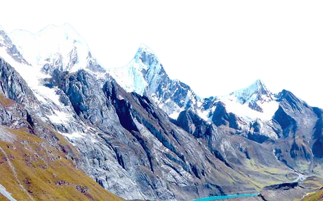
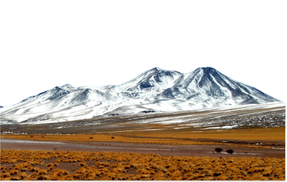
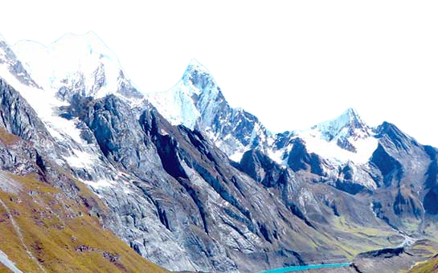
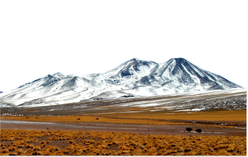
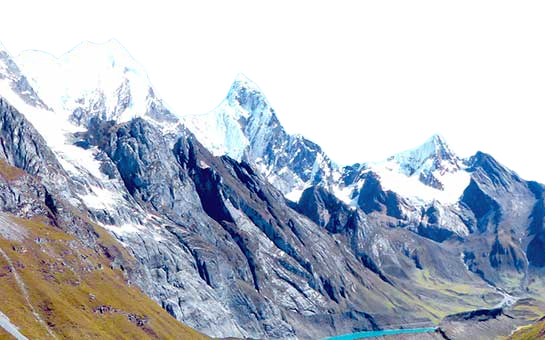
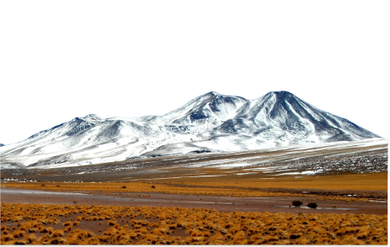
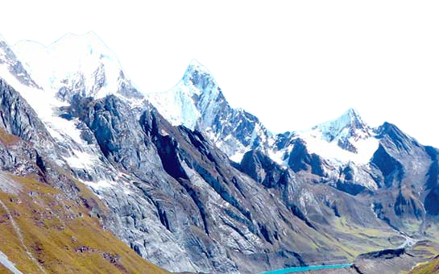
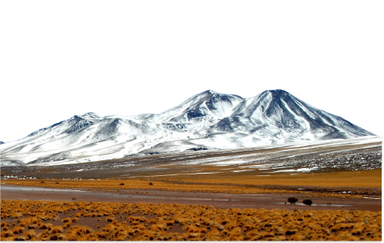

 



安第斯山脉，这座壮丽的自然之雄，像一条巍峨的脊梁，跨越南美洲大陆，宛如大地的骄傲。它以
其雄伟的峰峦、奇特的地貌和丰富多样的生态而闻名于世。当我置身于安第斯山脉的怀抱时，我仿佛被宇宙的力量所环绕。高耸入云的山峰，将我带入了一个壮丽而神秘的世界。山脉之巅，云雾缭绕，阳
光洒下，犹如神圣的光辉。我感受着空气的清新和纯净，仿佛每一次呼吸都充盈着能量和生命力。
安第斯山脉是大自然的杰作，它的地貌变幻多样。从雪峰覆盖的高山到多姿多彩的峡谷，从湍
急的河流到宁静的湖泊，无不展现着大地的奇妙之美。我走过
崎岖的山路，穿越茂密的森林，目睹着壮丽的瀑布奔腾而下，感受着大自然的无穷魅力。
安第斯山脉是历史的见证，它承载着古老文明的记
忆。印加帝国曾在这片土地上繁荣兴盛，留下了宏伟的遗迹和神秘的文化。我在遗迹中漫步，感受着古
代文明的韵味，思考着人类的智慧和创造力。
然而，安第斯山脉也面临着挑战和威胁。环境污染、气候变化和人类活动的影响正在逐渐侵蚀着这片宝贵的自然遗产。我们应当倍加珍惜和保护安第斯山脉，让其永远保持其原始的美丽和神圣的力量。
在安第斯山脉的怀抱中，我感受到了大自然的伟力和宇宙的神奇。这座壮丽的山脉教会了我谦卑和敬畏，也激发了我对自然界的热爱和保护之心。愿我们共同努力，让安第斯山脉永远绽放着它的壮丽光芒，让这片自然的宝藏永远繁荣和存在。
这是对安第斯山脉的散文描写，通过文字表达出了山脉的壮丽和神秘，以及人们对其保护和珍视的呼吁。安第斯山脉是大自然的奇迹，我们应当以敬畏和感激之心来对待它，并为保护和守护这片壮丽的自然之美而努力。